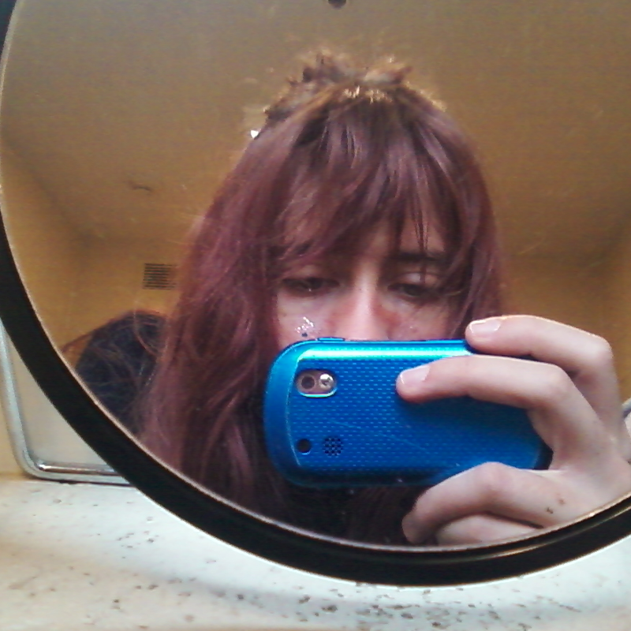

Playername: Atlas
Health: ♥ ♥ ♥ ♥ ♥
Skills:
HTML / CSS / JS
UI / UX / Graphic Design
Adobe Suite / AutoCAD / Microsoft Office
Weaknesses:
Water, archeologists, quicksand, penicillin
About:
hi! you've reached Atlas Clementine's artist portfolio (on the world wide web)!
with over a decade of experience creating and editing digital content, Atlas specializes in multi-media design and front-end web development.
click here for Atlas' sweet portfolio
Located in Asheville, NC.
Atlas can also be found online:
github
instagram
telegram messenger